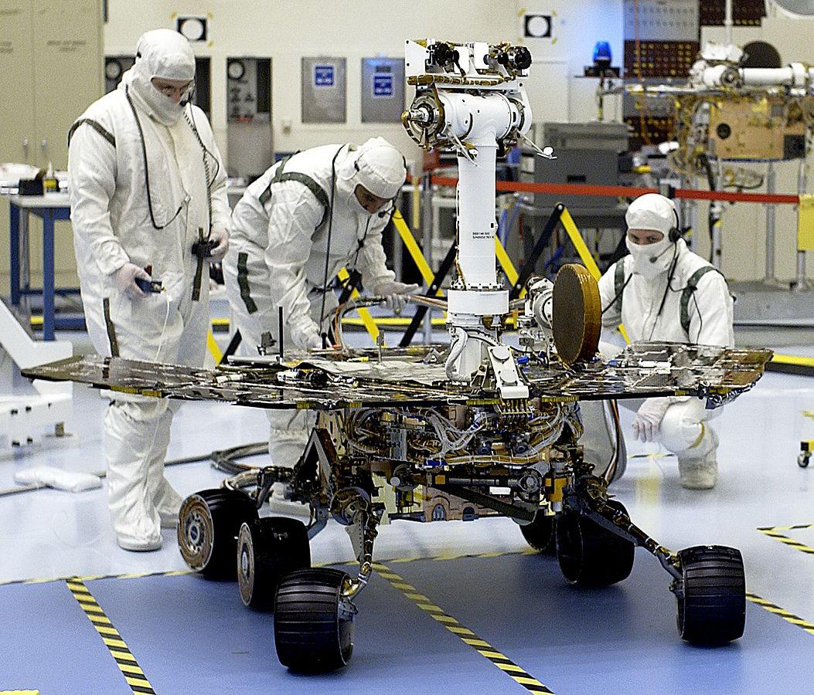
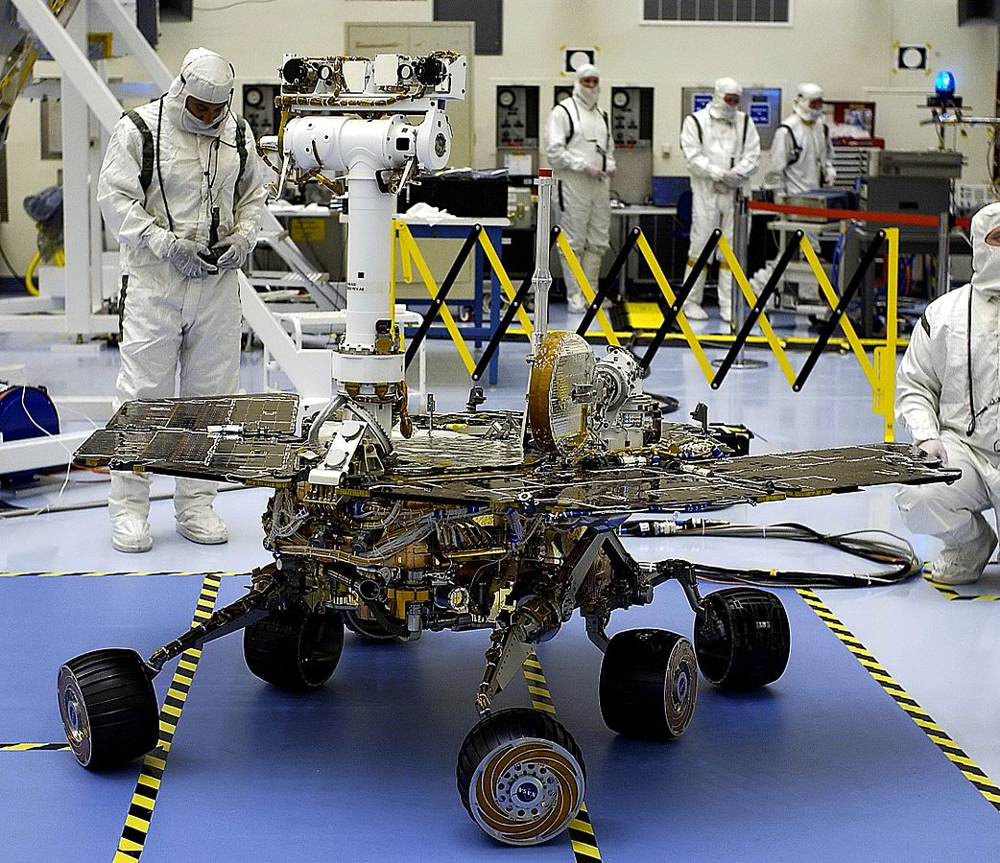
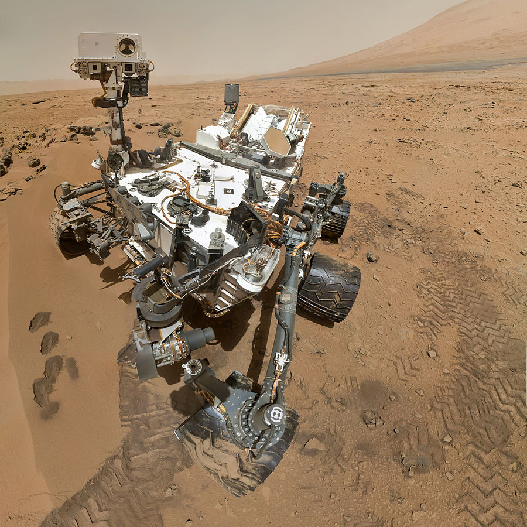

Миссии
| Spirit  |
«Спи́рит», (англ. Spirit) или «MER-A» (сокр. от Mars Exploration Rover — A) — первый марсоход космического агентства НАСА из двух запущенных США в рамках проекта Mars Exploration Rover. Старт миссии состоялся 10 июня 2003 года. Спускаемый аппарат с марсоходом совершил мягкую посадку на Марс 4 января 2004 года. В мае 2009 года марсоход застрял в песчаной дюне. Последняя связь с Землей была 22 марта 2010 года.
Марсоход работал гораздо дольше, чем запланированные 90 солов (марсианских солнечных суток). Благодаря очистке солнечных батарей естественным ветром Марса выработка электроэнергии значительно повысилась, из-за чего «Спирит» продолжал эффективно функционировать долгое время, в конечном итоге значительно превысив запланированный срок службы. «Спирит» проехал 7,73 км вместо запланированных 600 м, что позволило сделать более обширные анализы геологических пород Марса. |
| Opportunity  |
«Оппортьюнити» (англ. Opportunity) или MER-B (сокр. от Mars Exploration Rover — B') — второй марсоход космического агентства НАСА из двух запущенных США в рамках проекта Mars Exploration Rover. Был выведен с помощью ракеты-носителя Дельта-2 7 июля 2003 года. На поверхность Марса опустился 25 января 2004 года тремя неделями позже первого марсохода Спирит, успешно доставленного в другой район Марса, смещенный по долготе примерно на 180 градусов. «Оппортьюнити» совершил посадку в кратере Игл, на плато Меридиана.
Название марсоходу, в рамках традиционного конкурса НАСА, было дано 9-летней девочкой российского происхождения Софи Коллиз, родившейся в Сибири и удочерённой американской семьёй из Аризоны. |
| Curiosity  |
Марсианская научная лаборатория (МНЛ) (англ. Mars Science Laboratory, сокр. MSL) — миссия НАСА, в ходе выполнения которой на Марс был успешно доставлен и эксплуатируется марсоход третьего поколения «Кьюрио́сити» (англ. Curiosity). Марсоход представляет собой автономную химическую лабораторию в несколько раз больше и тяжелее предыдущих марсоходов «Спирит» и «Оппортьюнити». Аппарат должен будет за несколько месяцев пройти от 5 до 20 километров и провести полноценный анализ марсианских почв и компонентов атмосферы. Для выполнения контролируемой и более точной посадки использовались вспомогательные ракетные двигатели.
Запуск «Кьюриосити» к Марсу состоялся 26 ноября 2011 года, мягкая посадка на поверхность Марса — 6 августа 2012 года. Предполагаемый срок службы на Марсе — один марсианский год (686 земных суток). |